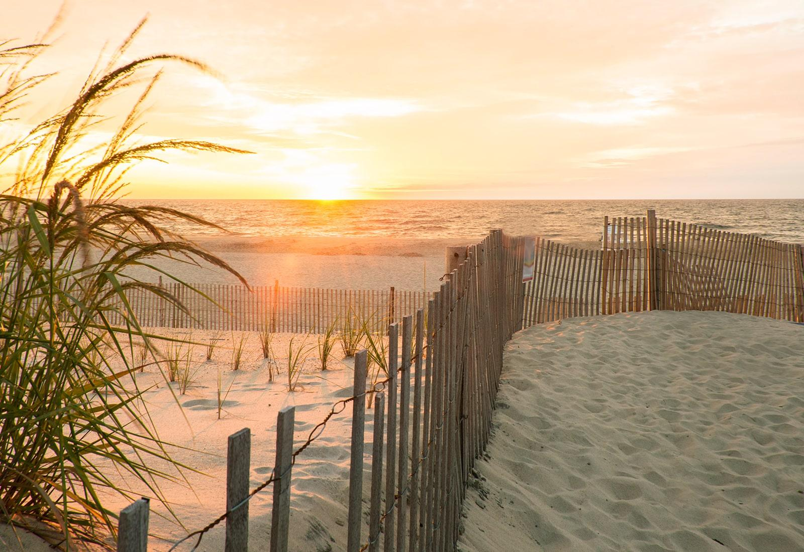

Delaware's state park system is 75 years old this year, and it began with three parks.
1951
The system dates to 1951, when Delaware's legislature authorized three state parks: Trap Pond, Fort Delaware and Brandywine Springs.
2026
What began with three parks is now a system of 17 state parks and 22 nature preserves, along with the Brandywine Zoo and the Indian River Marina. Together they protect more than 27,000 acres.
For anyone who knows Delaware from its coast, several of its best-known places are state parks. Cape Henlopen, Delaware Seashore and Fenwick Island state parks, and Beach Plum Island Nature Preserve, are where the state's designated surf fishing beaches are. Cape Henlopen is home to the fall hawk watch and to The Point, which reopened for the season on Oct. 1.
How the anniversary is being marked
Delaware State Parks has spread the 75th anniversary across the whole year rather than a single day:
- First Day Hikes on New Year's Day kicked the anniversary year off.
- A Day of Service on the Dr. Martin Luther King Jr. holiday, Jan. 19, was the first of four signature service days. The others are tied to Earth Day in April, the anniversary month of June, and a Fall Service Day.
- The fee season that began March 1 was billed as the start of a year of anniversary events and activities.
- The Parks for Everyone 5K, a virtual fundraiser, invites people to run, walk or roll the trails to raise money for future programs.
- A goal to plant 75,000 trees, reforesting land and cleared meadows, as part of the parks' strategic plan and DNREC's Tree for Every Delawarean Initiative.
The part still to come
The Fall Service Day is the anniversary event most likely to be ahead of you this season. Delaware State Parks publishes its date and locations on its 75th anniversary page; that, rather than any date printed here, is the one to check.
Seventy-five years on, the system that started with three parks reaches the ocean at Cape Henlopen, Delaware Seashore and Fenwick Island.
Sources: Delaware State Parks' "Our Story" and 75th anniversary pages (destateparks.com) for the 1951 founding, the three original parks and today's system; DNREC releases of Dec. 30, 2025 (First Day Hikes), Jan. 14, 2026 (Day of Service and the four service days), Feb. 24, 2026 (fee season and anniversary events) and June 22, 2026 (the Parks for Everyone 5K); Delaware State Parks' Tree Titans page for the 75,000-tree goal. Delaware Beach Finds did not attend anniversary events for this story.